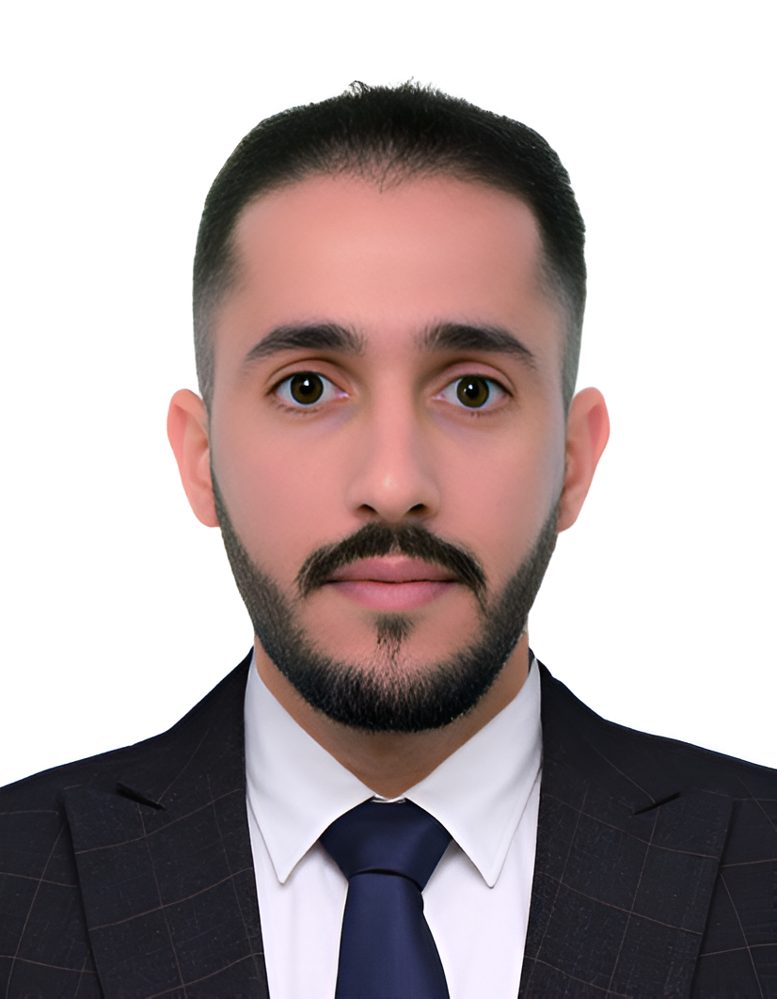

Doctor in Analytical-Electrochemistry and Materials Science

About Me
I am Dr. Azriouil Mouhcine, a researcher specialized in electrochemistry and materials science. My work focuses on electroanalysis, electrocatalysis, and the development of electrochemical sensors for sensing platform of organic and inorganic substances.
Research Interests and Skills
Electroanalysis
Electrocatalysis for HER & OER
Electrochemical Impedance Spectroscopy
Differential Pulse Voltammetry (DPV)
Cyclic Voltammetry (CV)
Squar Wave Voltammetry (SWV)
linear Sweaping Voltammetry (LSV) and Tafel
Chronoamperometry (CA)
Materials Synthesis & Characterization
Synthesis of Graphene (GO and rGO), Clay, natural phosphate and AgNPs